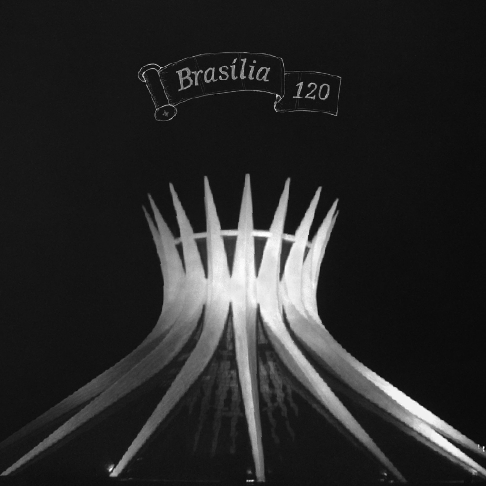

PROJETO AUTORAL / EDIÇÃO DIGITAL
Brasília120.
Uma cidade revelada pela noite.
Entre luzes, sombras e longas exposições, Brasília 120 convida você a percorrer a capital federal para além de seus monumentos. Uma imersão na fotografia analógica noturna em médio formato, entre a arquitetura, o cotidiano e as tensões sociopolíticas da cidade.
São 42 fotografias, cinco películas e três óticas que se entrelaçam em um mesmo percurso. Folheie o livro e descubra Brasília no tempo da fotografia analógica.
- PELÍCULA
- 120
- FORMATO
- 1:1
- PÁGINAS
- 56
TRÊS ÓTICAS
FOTOLIVRO DIGITALCapa

Revelando página…
Não foi possível carregar a página. Tente novamente.
01/56
Deslize ou use as setasPDF original ↗